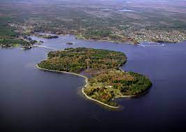

To crack this clue you need to know about some mystery island

Guess the island Above
CLUE
It is a privately owned island in Lunenburg County on the south shore of Nova Scotia, Canada.
The island is best known for various theories about buried treasure or historical artifacts, and the associated attempts to explore the site.
A "curse" on the treasure is said to have originated more than a century ago and states that seven men will die in the search for the treasure before it is found.